摘要
如何让机器人在开放环境中从感知到行动实现通用智能，是人工智能的核心挑战之一。2024-2026 年，大规模预训练模型（VLM、视频生成模型）与强化学习的结合为这一问题带来了范式级转变。本文综述 60 余篇 2025-2026 年的核心工作，覆盖四条技术路线——VLA（Vision-Language-Action）、WAM（World Action Model）、RL Sim2Real 和 Diffusion Policy——及其在 Hybrid 范式下的融合。
本文的贡献包括：(1) 提出跨路线的统一分析框架；(2) 构建 104 节点、299 边的论文引用图谱；(3) 识别六大趋势和五个开放问题。本文的中心论点是：四条路线正在收敛到 Pre-train→SFT→RL 三阶段范式，这一收敛由三个结构性力量驱动——基础设施共享（PPO 与 Diffusion Policy 被跨路线引用）、数据效率瓶颈、和部署实时性约束。
对于希望进入该领域的研究者，建议的阅读路径为：首先理解 Diffusion Policy [Chi et al., 2023] 和 PPO [Schulman et al., 2017] 两个基础设施节点；然后沿 VLA 主线阅读 RT-2 → OpenVLA → π₀ → π₀.5 的演进；在此基础上阅读 DreamZero 了解 WAM 的核心范式；最后通过 POCO 或 ConRFT 理解 Diffusion + RL 融合的技术前沿。
关键词: 具身智能、Vision-Language-Action、世界模型、扩散策略、Sim-to-Real、混合范式
§1 引言
1.1 范围与方法论
本文综述 2024 年 10 月至 2026 年 4 月期间发表或预印的机器人学习论文。论文选择遵循以下标准：(1) 发表于 arXiv 预印本、顶级会议（CoRL, RSS, ICRA, NeurIPS, ICML, ICLR）或顶级期刊；(2) 涉及机器人策略学习、世界模型、Sim2Real 迁移或扩散策略中的至少一个方向；(3) 包含真机验证或高保真仿真（Isaac Lab, MuJoCo）实验。搜索方法为 arXiv 关键词检索（"robot learning", "VLA", "world model + robot", "diffusion policy", "sim-to-real humanoid"）结合引文追溯和顶会接收列表，最终纳入 60 篇调研论文和 44 篇高频引用的参考文献。
排除范围：纯自然语言处理或计算机视觉工作（无机器人验证）、机器人硬件设计（无学习算法）、2024 年 10 月前已充分综述的经典方法。
评估方法学说明。 本文报告的定量结果均来自各论文自报数据。该领域尚无统一评估基准——不同工作使用不同仿真环境（SIMPLER、Calvin、RLBench、MetaWorld、RoboTwin）和真机任务，试验次数从 10 到 100 不等，多数工作未报告方差或置信区间。因此，跨论文的数字对比应谨慎解读。本文尽可能标注结果的来源基准，但无法提供控制变量的统一定量对比。
1.2 相关综述
机器人学习领域已有多篇综述。Firoozi et al. [2023] 综述了基础模型在机器人学中的应用，但覆盖截止于 2023 年，未涉及 VLA、Flow Matching 动作头和 RL 微调等 2024-2026 年的核心进展。Xiao et al. [2023] 聚焦于机器人操作中的大语言模型应用。Zeng et al. [2023] 综述了 Sim2Real 迁移方法。本文与上述工作的区别在于：(1) 时间覆盖延伸至 2026 Q1；(2) 同时横跨 VLA、WAM、RL Sim2Real 和 Diffusion Policy 四条路线，分析其融合趋势；(3) 提供定量引用图谱分析。
1.3 预备知识与符号
机器人策略学习可形式化为 POMDP \(\mathcal{M} = (\mathcal{S}, \mathcal{A}, T, R, \gamma, \mathcal{O}, E)\)，其中 \(\mathcal{S}\) 为状态空间，\(\mathcal{A}\) 为动作空间，\(T: \mathcal{S} \times \mathcal{A} \to \mathcal{S}\) 为转移函数，\(R: \mathcal{S} \times \mathcal{A} \to \mathbb{R}\) 为奖励函数，\(\gamma \in (0,1]\) 为折扣因子，\(\mathcal{O}\) 为观测空间，\(E: \mathcal{S} \to \mathcal{O}\) 为发射函数。智能体仅能访问观测 \(o_t = E(s_t)\)（如 RGB 图像、本体感知），而非完整状态 \(s_t\)。
全文统一使用以下符号：\(s\) 表示状态，\(o\) 表示观测，\(a\) 表示动作，\(z\) 表示潜在表征，\(\pi_\theta(a|o)\) 表示参数为 \(\theta\) 的策略，\(l\) 表示语言指令。对于涉及去噪过程的扩散/流匹配模型，\(a_T\) 表示纯噪声，\(a_0\) 表示去噪后的干净动作，\(t \in [0,T]\) 为扩散时间步。
1.4 范式转变
2022 年 Google 发布 RT-1 [Brohan et al., 2022]，率先在大规模真机数据上训练 Transformer 策略。此后三年的关键节点：
- 2023：RT-2 [Brohan et al., 2023] 用 55B VLM 直接输出动作 token；Diffusion Policy [Chi et al., 2023] 用 DDPM 建模多模态动作分布；Open X-Embodiment [2023] 联合 21 家机构汇总 60 余个已有数据集，覆盖 22 种机器人、527 项技能。
- 2024：OpenVLA [Kim et al., 2024] 开源 7B VLA；π₀ [Physical Intelligence, 2024] 用 VLM + Flow Matching 实现高灵巧操作；VPP [Hu et al., 2024] 证明视频扩散模型内部表征可驱动策略（Calvin ABC-D 泛化 +18.6%）。
- 2025：π₀.5 [Physical Intelligence, 2025] 完整验证 VLA + Flow Matching + RL 三阶段训练；GR00T N1 [NVIDIA, 2025] 成为开源人形基础模型标杆（8 篇 2026 论文引用）；V-JEPA 2 [Meta FAIR, 2025] 在潜在空间预测未来表征，推理加速 10-100 倍。
- 2026 Q1：单季度 40+ 篇工作，覆盖架构创新（FocusVLA、GigaWorld）、效率突破（DMPO 单步推理 >120Hz、15 分钟完成人形运动训练）、系统集成（DIAL 双系统、AGILE 标准化工作流）。
1.5 分类框架
本文将综述论文组织为四条技术路线加一个融合类别。分类依据是策略生成动作的核心机制：VLA 通过语言模型的动作头直接输出动作；WAM 先预测未来状态再解码动作；RL Sim2Real 在仿真器中通过奖励信号优化策略；Diffusion Policy 通过去噪过程从噪声中采样动作。Hybrid 不是独立路线，而是前四者的组合——定义为同时使用两条及以上路线的核心技术的系统。
这一分类存在局限：2026 年的多数工作跨越多条路线（如 π₀.5 同时使用 VLM、Flow Matching 和 RL），DreamZero 同时是 WAM 和 Diffusion 工作。对于跨路线论文，本文根据其主要贡献将其归入最相关的一条路线，并在相关章节进行交叉讨论。
本文聚焦于学习型方法，但需明确其与经典机器人学方法（MPC、轨迹优化、阻抗控制）的关系。经典方法在已知动力学模型的结构化任务中仍具不可替代的优势——例如工业装配线上的轨迹规划。学习方法的核心增量贡献在于：(1) 处理语言等非结构化输入（VLA）；(2) 在动力学模型未知或过于复杂时从数据中学习隐式模型（WAM、RL）；(3) 从少量示教中学习多模态技能（Diffusion Policy）。两者并非替代关系——§8 将讨论的 Hybrid 系统中，高层规划常由学习模型完成，低层力控仍依赖经典控制器（如 KineVLA 的逆运动学求解器）。
| 维度 | VLA | WAM | RL Sim2Real | Diffusion Policy | Hybrid |
|---|---|---|---|---|---|
| 核心机制 | VLM + 动作头 | 预测未来 + 动作解码 | 仿真训练 + 迁移 | 去噪扩散/流匹配 | 多范式融合 |
| 语言理解 | 原生支持 | 弱/无 | 无 | 弱/无 | 强 |
| 物理建模 | 隐式（VLM 内部） | 显式（预测未来状态） | 显式（仿真引擎） | 无 | 混合 |
| 泛化能力 | 强（语义泛化） | 强（物理泛化） | 受限于 sim-to-real gap | 受限于示教覆盖 | 有望最强（待系统验证） |
| 数据需求 | 大量图文 + 少量机器人轨迹 | 大量视频 + 少量动作标签 | 零真机数据 | 10-50 条示教 | 混合 |
| 推理延迟 | >100ms | 慢→快（7Hz-实时） | 1-10ms | 100步→1步（>120Hz） | 取决于架构 |
| 最佳场景 | 语言指令操作 | 新环境零样本适应 | 人形运动控制 | 接触密集精细操作 | 复杂长程任务 |
| 2026 代表 | FocusVLA, AR-VLA | DreamZero, GigaWorld | G1 Running, VIRAL | DMPO, POCO | π₀.5, DIAL |
1.6 融合趋势
2026 年四条路线加速融合，我们认为其正在收敛到与 LLM 训练流程高度相似的三阶段范式：
| LLM 阶段 | 机器人对应 | 典型方法 |
|---|---|---|
| Pre-train | VLM/视频预训练 | RT-2, Cosmos, GR-2 |
| SFT | 模仿学习 / Flow Matching | OpenVLA fine-tune, π₀ |
| RLHF | RL 微调 | POCO, DMPO, ConRFT, TGRPO |
| Reward Model | 物理奖励 / 任务成功率 | 多域奖励函数 |
本文引用图谱分析（§9）显示，PPO 和 Diffusion Policy 各被 16 篇论文引用，已从独立技术路线升级为跨路线基础设施——VLA、WAM 和 Hybrid 方向的工作都在其训练流程中使用这两项技术。
本文的中心论点是：四条路线的收敛并非偶然，而是由基础设施共享（§9 将证明 PPO 和 Diffusion Policy 被跨路线引用）、数据效率瓶颈（§6）和部署实时性约束（§2、§8）三个结构性力量共同驱动。后续各章将从不同角度推进这一论点。
本文后续结构如下：§2 分析跨路线的感知与表征设计空间；§3-§4 分别深入 VLA 和 WAM 两条主线；§5-§7 围绕动作生成、训练数据和优化算法三个跨路线共性问题展开分析；§8 讨论系统集成与部署；§9 呈现引用图谱分析；§10 总结趋势、开放问题和本文局限。
§2 感知与表征：从像素到潜在空间
2.1 视觉编码器的设计空间
四条技术路线在感知层的分歧，揭示了一个贯穿全文的张力：语义理解、物理精度与推理速度之间的三角权衡——这一权衡最终驱动了各路线在架构层面的不同妥协，也是它们走向融合的起点。VLA 使用 SigLIP/CLIP 等对比学习编码器，继承预训练的语义对齐能力（图像-文本匹配），代价是缺乏时序建模。WAM 使用视频 ViT（如 V-JEPA 2 的 ViT-H），原生处理帧序列，捕获运动和变化信息。RL Sim2Real 使用轻量 CNN（3-5 层），因为策略运行在机载 Orin 芯片上，推理延迟必须低于 10ms。
FocusVLA [Zhang et al., 2026, CUHK-SZ/Shanghai AI Lab] 对 VLA 的视觉利用做了系统诊断，发现三层瓶颈：(1) 残差连接形成的跳过通道使模型倾向绕过视觉特征直接利用语言信息；(2) 标准 ViT 的 patch tokenization 对所有区域均匀分配 token，背景噪声与操作目标获得同等注意力资源；(3) VLM 预训练的视觉表征面向语义理解（物体类别、关系），而非空间精确性（6-DOF 位姿、相对距离）。
针对这三层瓶颈，2026 年出现了三种修复策略：
FocusVLA 提出 Modality Cascaded Attention，强制视觉 token 先经过独立自注意力层再与语言 token 交叉注意，阻断跳过通道；焦点注意力动态选择高信息量 patch，丢弃冗余背景 token。SpatialVLA [Qu et al., 2025, PKU/BAAI] 在编码器输出后拼接显式 3D 空间表征（深度图、点云特征），在装配任务上性能提升超过将编码器参数翻倍的收益。ST-VLA [Wu et al., 2026, HUST/Tencent] 将输入扩展到短时序序列，自适应 token 化为运动区域（光流大的 patch）分配更多 token，静态背景激进压缩。
LingBot-Depth [Tan et al., 2025, Ant Group] 从传感器端解决空间感知问题：将 RGB-D 相机的深度缺失和噪声视为"掩码信号"，通过 masked depth modeling 补全深度图，在深度精度和像素覆盖率上超过顶级 RGB-D 相机，并提供 RGB 与深度模态对齐的潜在表征。开源 3M RGB-depth 数据对（2M 真实 + 1M 仿真）。
三种策略的共同结论：VLA 视觉编码器的瓶颈不在表征能力（ViT 已足够强），而在信息传导效率——如何将任务相关的视觉信号高效传递到动作生成模块。
2.2 状态表征空间
世界模型（WAM）的核心设计选择是在什么表征空间中预测未来状态。2024-2026 年出现了五条路线，可按推理效率和信息保真度排列：
像素空间。 DreamZero [Ye et al., 2026, KAIST/Google DeepMind] 使用 14B 视频扩散模型在像素空间预测未来帧，再从预测帧解码动作。零样本泛化在其评估任务上超过对比 VLA 约 2 倍，仅需 30 分钟 play data 适应新机器人。代价是推理速度仅 ~7Hz。
潜在空间。 V-JEPA 2 [Assran et al., 2025, Meta FAIR] 放弃像素生成，在潜在空间预测未来表征。推理加速 10-100 倍。潜在表征丢弃了光照、纹理等任务无关细节，天然对视觉扰动鲁棒。
3D 空间。 GWM [Lu et al., 2025, PKU/Tsinghua] 将 3D Gaussian Splatting 引入世界模型，支持任意视角渲染、遮挡推理和 3D 空间规划。在需要精确几何信息的装配、堆叠任务中，像素和潜在空间预测会丢失关键的深度和遮挡关系。
因果分离。 GigaWorld [Ye et al., 2026, PKU/Shanghai AI Lab] 训练时用因果掩码保证动作 token 先于视频 token 生成（动作是因，视频是果），推理时完全跳过视频生成只输出动作。推理加速 9 倍，在 RoboTwin 2.0 上相对 π₀.5 提升约 95%（RoboTwin 2.0 基准，自报数据）。
无标签潜在动作。 LAWM [Tharwat et al., 2025, Adelaide] 和 LAPA [Ye et al., 2024, UC Berkeley] 从纯视频中推断帧间潜在动作，预训练世界模型后下游微调仅需 1/100 的配对数据。
| 表征空间 | 推理速度 | 信息保真度 | 数据需求 | 代表作 |
|---|---|---|---|---|
| 像素 | 慢 (7Hz) | 最高（原始像素） | 视频+动作 | DreamZero |
| 潜在 | 很快 (10-100x) | 中（丢弃无关细节） | 视频 | V-JEPA 2 |
| 3D | 中 | 高（保留几何） | 多视角 | GWM |
| 因果分离 | 快 (9x) | 训练高/推理无 | 视频+动作 | GigaWorld |
| 潜在动作 | 快 | 中 | 纯视频 | LAWM, LAPA |
2.3 模型规模与推理效率
VLA 参数量从 RT-1 的 35M 到 PaLM-E 的 562B（16,000 倍），但能力提升非线性。RT-2 实验显示 55B VLM 可将训练数据外的语义概念（如"将可乐罐移到泰勒·斯威夫特旁边"）零样本迁移到机器人操作。GEN-0 [Generalist AI, 2025] 在 270,000 小时数据上报告了可预测的 scaling 关系，任务成功率与数据量/参数量的关系遵循对数曲线。
但机器人控制的实时性要求（10-100Hz）对模型规模施加硬约束。70B 模型在 A100 上推理延迟 200-500ms（2-5Hz），无法满足精细操作需求。对此出现两种架构解法：
DIAL [Chen et al., 2026, Tencent/CUHK-SZ] 采用双系统架构：VLM 作为慢系统预测潜在未来状态（~1Hz），轻量运动网络作为快系统将潜在意图转化为低延迟动作（>50Hz）。VLM 从不直接输出动作，保留预训练知识。仅需 1/10 示教数据。
KineVLA [Han et al., 2026, Tencent/ZJU] 将动作分解为两层：高层 VLM 预测末端执行器位姿（SE3，具身无关，~5Hz），低层逆运动学求解器计算关节动作（>100Hz）。跨具身迁移只需替换 IK 求解器。
VLA-OPD [Zhong et al., 2026, CASIA] 从另一角度解决规模问题：用大 VLA 教师模型重标注小学生模型的 rollout 数据进行在线策略蒸馏，7B 模型可接近 70B 教师的性能，RL 微调计算开销降低 10 倍以上。FT-VLA [Zhen et al., 2025, ByteDance] 系统优化了数据采样、LoRA 适配和推理加速，7B 模型加正确微调策略可在特定任务上超过未微调的 70B 模型。
2.4 小结
感知与表征的设计空间呈现出清晰的权衡结构：视觉编码器在语义理解、时序建模和推理速度之间三选一；状态表征在信息保真度和推理效率之间形成 Pareto 前沿；模型规模受到实时性硬约束，双系统（DIAL）和运动学分解（KineVLA）提供了架构级解法。这些设计选择构成了 §3（VLA）和 §4（WAM）两条主线的技术基础。
§3 VLA：从语言理解到物理行动
3.1 架构演进与动作表示分歧
VLA 路线的核心赌注是：VLM 在互联网规模数据上学到的语义理解能力可以迁移到物理动作生成——这一赌注已被 RT-2 到 π₀.5 的演进部分验证，但也暴露了语义理解与物理精度之间的结构性裂缝（§2.1）。
VLA 的核心思路是将预训练 VLM 改造为机器人策略：输入图像和语言指令，输出关节动作。标准架构由三部分组成：视觉编码器（ViT/SigLIP）提取图像特征，语言编码器（LLaMA/PaLM）处理指令文本，融合表征送入动作头输出关节动作。
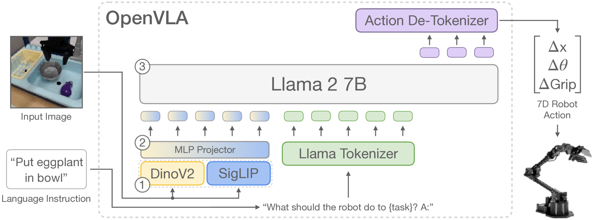
从 RT-1 [2022] 的 Transformer 策略到 RT-2 [2023] 的 55B VLM 输出离散动作 token，再到 OpenVLA [Kim et al., 2024] 的开源 7B 方案，早期 VLA 的核心演进逻辑是：更大的预训练模型 → 更强的下游泛化。PaLM-E [Driess et al., 2023] 用 562B 参数证明了 LLM 接地物理世界的可行性。SayCan [Ahn et al., 2022] 将语言理解与物理可供性（affordance）解耦，通过 affordance function 过滤 VLM 提出的动作候选，只保留物理上可执行的子集。GR00T N1 [NVIDIA, 2025] 作为开源人形基础模型被 8 篇 2026 论文引用，成为 VLA 生态的公共基准。
2024 年动作表示出现根本性分歧。离散 token 化（RT-2、OpenVLA）将连续动作空间量化为 256 bin，等价于分类问题。优势是直接复用 LLM 的 next-token-prediction 训练目标和推理基础设施，训练稳定（交叉熵损失）。劣势是量化精度受限——256 bin 在 ±0.5m 工作空间中分辨率约 4mm，对叠衣服等需要亚毫米精度的任务不足，且误差随步数累积。
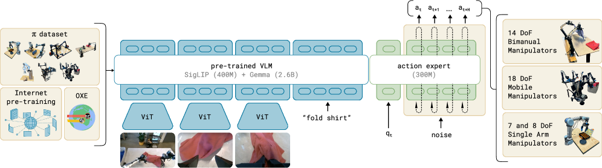
π₀ [Physical Intelligence, 2024] 提出用 Flow Matching 替代离散 token 作为动作头。Flow Matching 学习从噪声 \(a_T\) 到动作 \(a_0\) 的向量场 \(v_\theta(a_t, t)\)，通过求解 ODE \(da/dt = v_\theta(a_t, t)\) 生成连续精度的动作。这使 VLA 首次胜任叠衣服、清桌子等高灵巧任务。π₀ 被 14 篇 2026 论文引用。后续 π₀.5 [2025] 整合 RL 微调，π₀.6 [2025] 验证从真实经验持续学习，形成 pretrain → flow matching → RL → online learning 的完整工业路线。
AR-VLA [Hu et al., 2026, ETH Zurich/Huawei] 提出第三条路径：纯自回归动作头，逐维度生成连续动作值。第 \(i\) 维的值以前 \(i-1\) 维为条件自回归生成。推理速度与 LLM 相当（无迭代去噪），似然函数 \(\log p(a|o) = \sum_i \log p(a_i | a_{ 三种动作表示的核心权衡可总结为： 离散 token 可直接用 PPO/GRPO 微调（标准分类策略梯度）；Flow Matching 的似然函数无闭式解，需要 ConRFT 的 Consistency 替代或 POCO 的后验推断等间接方法（详见 §5.2 和 §7.1）；自回归连续动作的似然可直接计算，RL 微调与 LLM PPO 高度类似。动作表示的选择本质上决定了 VLA 后续 RL 微调的技术路径。 2026 Q1 的 VLA 研究从参数 scaling 转向架构层面的针对性优化。 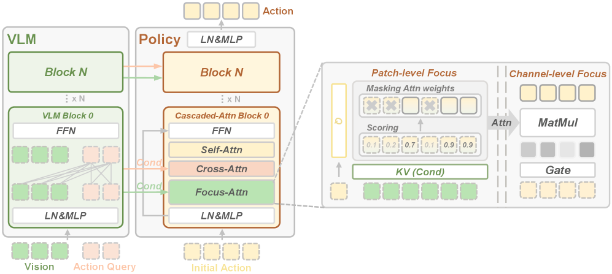 FocusVLA [Zhang et al., 2026] 的视觉瓶颈诊断和修复方案已在 §2.1 详述。ST-VLA [Wu et al., 2026, HUST/Tencent] 引入 4D 时空感知：时间维度通过动态编码捕捉运动趋势，空间维度通过自适应 token 化将更多 token 分配给运动区域。KineVLA [Han et al., 2026] 的运动学分解已在 §2.3 详述。 这些创新的共同方向：不追求更大的模型，而是更精准地利用已有能力——更好的视觉信号传导（FocusVLA）、更丰富的时序信息（ST-VLA）、更合理的任务分解（KineVLA）。 2026 年 VLA 领域最活跃的方向是 RL 微调。VLA-RL [Zhang et al., 2025, PKU] 较早完整移植 LLM 的 RLHF 范式到 VLA：Phase 1 VLM 预训练，Phase 2 模仿学习/SFT，Phase 3 RL 微调。实验表明 RL 可在不破坏预训练泛化的前提下显著提升任务成功率，条件是采用 KL 散度惩罚 \(D_{KL}(\pi_\theta \| \pi_{ref})\) 和参数冻结策略约束更新幅度。 ConRFT [Chen et al., 2025, NJU] 用 Consistency Model 替代 Diffusion 作为 VLA 动作头。Consistency Model 天然支持单步生成且端到端可微，RL 微调收敛速度比 Flow Matching 快 2-3 倍。被 6 篇 2026 论文引用。 TGRPO [Chen et al., 2025, NWPU] 发现 GRPO 在轨迹级应用时的 token 不平衡问题：轨迹中仅约 5% 的 token 承载关键决策信号（如碰触物体瞬间的力控、转向点的方向选择），标准 token 级归一化 \(\hat{A}_t = (A_t - \mu) / \sigma\) 将这些信号淹没在 95% 的冗余 token 中。TGRPO 改为轨迹级归一化，在轨迹维度计算均值和方差，保留关键决策点的信号完整性。 2024-2025 年 VLA 围绕四个核心瓶颈形成了系统化的解决方案： 空间感知增强。 标准 VLA 继承的 VLM 视觉编码器擅长语义理解但缺乏空间精度。SpatialVLA [Qu et al., 2025, PKU/BAAI] 在编码器输出后拼接显式 3D 表征（深度图、点云特征），在装配任务上提升幅度超过将编码器参数翻倍的收益。TraceVLA [Zheng et al., 2024, SJTU] 采用零成本方案：在输入图像上叠加历史末端执行器轨迹的 2D 投影，无需修改架构即将时序运动信息编码为视觉输入。两者的共同发现是：空间信息应显式注入，而非依赖 VLM 隐式推断。 推理与可解释性。 CoT-VLA [Liu et al., 2025, SJTU] 在输出动作前生成视觉推理步骤（物体位置 → 抓取策略 → 运动路径），使决策过程可追溯和调试。WorldVLA [Li et al., 2025, HKU] 在自回归框架内同时预测动作和未来视觉状态，将 WAM 的"预测未来"思路引入 VLA 框架。两者都通过增加中间推理步骤提升策略质量，代价是增加了推理延迟。 效率优化。 VLA 的推理速度受限于动作 token 序列长度和模型规模。FAST [Pertsch et al., 2025, MIT] 学习压缩的动作 token 表示，减少动作序列长度。FT-VLA [Zhen et al., 2025, ByteDance] 系统优化数据采样、LoRA 适配和推理加速，证明 7B 模型加正确的微调策略可在特定任务上超过未微调的 70B 模型。 跨具身泛化。 UniVLA [Li et al., 2025, PKU] 将不同机器人的动作空间统一映射到潜在动作空间，使单一 VLA 可跨不同机器人迁移——解决了当前 VLA 依赖特定机器人动作空间的局限。LingBot-VLA [Wu et al., 2025, Ant Group] 是另一种跨平台方案：在约 20,000 小时真机数据（覆盖 9 种双臂构型）上训练，在 3 个机器人平台各 100 个任务上验证泛化能力，每任务仅需 130 条 post-training 数据即可适配。工程层面，其 8-GPU 训练吞吐达 261 samples/s，是现有 VLA 训练框架的 1.5-2.8 倍。代码、模型和基准数据均已开源。 安全方面，Tex3D [Chen et al., 2026, NYU/NUS] 揭示了 VLA 的结构性脆弱性：端到端 3D 对抗纹理攻击仅通过修改物体表面纹理即使任务失败率达 96.7%。这一攻击之所以有效，是因为 VLA 的视觉编码器将纹理特征和空间特征耦合在同一表征中，对抗纹理扰动可直接干扰空间推断。这一发现揭示了 VLA 视觉编码器的结构性脆弱性，但需注意此攻击需要物理修改物体纹理，攻击门槛高于纯数字对抗样本。 VLA 路线的核心优势是继承了 VLM 的语言理解和语义泛化能力，核心瓶颈集中在三个方面：(1) 视觉信息利用效率（FocusVLA、SpatialVLA 等正在解决）；(2) 动作精度与推理速度的权衡（离散 token、Flow Matching、自回归三条路径各有取舍）；(3) RL 微调稳定性（需要 KL 约束、参数冻结等技术防止遗忘预训练知识）。2026 年的研究重心已从"更大的模型"转向"更精准地利用已有能力"。与经典方法对比，VLA 的独特价值在于处理开放词汇的语言指令——这是 MPC 和轨迹优化无法实现的。但在不涉及语言输入的固定任务上，7B VLA 的精度和速度尚未系统性超越经过工程优化的经典 pipeline（感知模块 + 抓取规划器 + 运动规划器），后者在工业部署中仍是主流方案。§4 将讨论采用截然不同策略的 WAM 路线。 如果 VLA 的赌注是语义理解可迁移到动作生成，WAM 的赌注则是：显式的物理预测——即使不完美——优于隐式的物理理解。§4.4 将讨论 GigaWorld 的证据如何挑战这一假设。 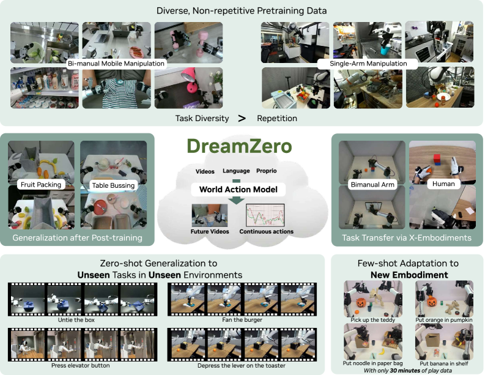 WAM 与 VLA 的路径差异在于中间步骤：VLA 直接从观测映射到动作 \(\pi_\theta(a|o, l)\)，WAM 先预测未来状态 \(\hat{s}_{t+1:t+k} = f(s_t, a_t)\)，再从预测中解码动作 \(a_t = g(\hat{s}_{t+1:t+k})\)。这一中间步骤引入了显式的物理动力学先验。 WAM-vs-VLA [Zhang et al., 2026, Ant Group/ZJU] 进行了首次系统对比实验，在 LIBERO-Plus 和 RoboTwin 2.0-Plus 基准上评估视觉和语言扰动下的鲁棒性。WAM 方面，LingBot-VA 在 RoboTwin 2.0-Plus 上达 74.2% 成功率，Cosmos-Policy 在 LIBERO-Plus 上达 82.2%。VLA 方面，π₀.5 在部分任务上可达到相当的鲁棒性，但依赖大规模多样化数据和多目标训练。混合方案（部分引入视频预训练的 VLA）表现出中间水平的鲁棒性——视频先验的整合方式决定了鲁棒性增益。这一对比的核心结论是：WAM 的物理先验编码在潜在动力学中，不依赖表面视觉特征或特定语言措辞，因而在扰动下更稳定。 LingBot-VA [Li et al., 2025, Ant Group] 是上述对比中表现最佳的 WAM 之一，采用自回归扩散框架联合学习帧预测和策略执行。三个关键设计：(1) Mixture-of-Transformers 架构在共享潜在空间中整合视觉和动作 token；(2) 闭环 rollout 机制持续获取真实环境反馈而非依赖自身预测；(3) 异步推理流水线将动作预测与电机执行并行化。在长程操作、post-training 数据效率和新配置泛化上表现突出。代码和模型已开源。 §2.2 已从表征空间角度概述了五条路线的推理效率和信息保真度。本节深入分析每条路线的技术细节和设计权衡。 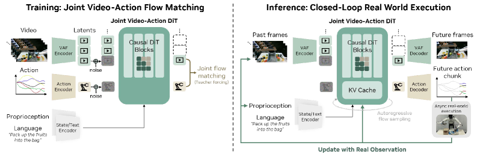 像素空间：DreamZero。 DreamZero [Ye et al., 2026, KAIST/Google DeepMind] 使用 14B 参数的视频扩散模型，以当前观测和语言指令为条件预测未来 \(k\) 帧 \(\hat{I}_{t+1:t+k}\)，然后用一个轻量逆动力学模型从预测帧对 \((\hat{I}_t, \hat{I}_{t+1})\) 解码动作。零样本泛化能力在其评估任务上超过对比 VLA 约 2 倍，仅需 30 分钟 play data 即可适应全新机器人——play data 只需覆盖新机器人的基本运动学，物理先验已由视频预训练提供。DreamZero 是引用图中连接最广的调研论文（~28 条边），同时引用了 VLA（π₀、OpenVLA）、WAM（V-JEPA 2、Cosmos）和 Diffusion（DDPM、Flow Matching）三个领域的基础工作。推理速度 ~7Hz 是其主要瓶颈，限制了实时控制应用。 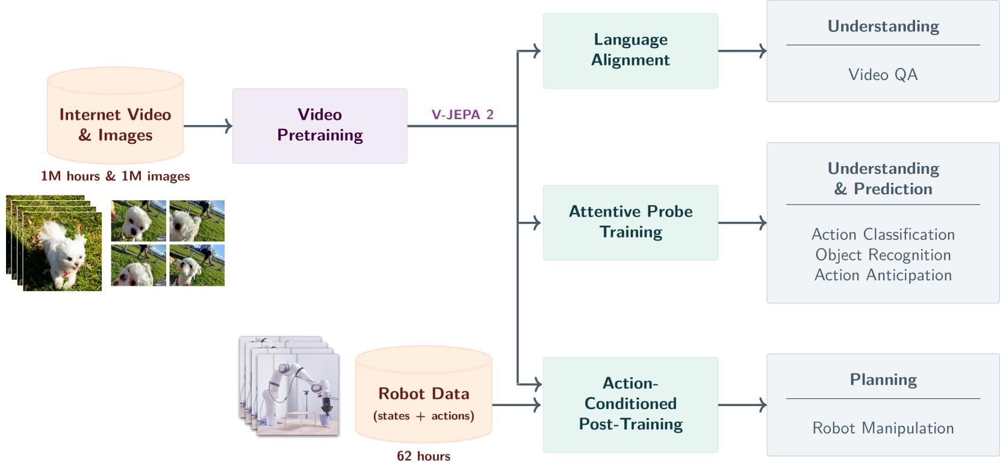 潜在空间：V-JEPA 2。 V-JEPA 2 [Assran et al., 2025, Meta FAIR] 使用 Joint Embedding Predictive Architecture，在潜在空间中预测未来表征 \(\hat{z}_{t+k} = f_\theta(z_t, \Delta t)\)，完全不生成像素。编码器将每帧映射到潜在向量 \(z_t = \text{Enc}(I_t)\)，预测器直接在 \(z\) 空间操作。优势是推理加速 10-100 倍（无需运行像素级解码器），且潜在表征已丢弃光照、纹理等任务无关信息，天然对视觉扰动鲁棒。代价是潜在空间的可解释性较差，调试困难。 3D 空间：GWM。 GWM [Lu et al., 2025, PKU/Tsinghua] 将 3D Gaussian Splatting 引入世界模型。每个 3D Gaussian 包含位置 \(\mu\)、协方差 \(\Sigma\)、不透明度 \(\alpha\) 和颜色特征，世界模型预测这些 Gaussian 参数的未来值。原生支持任意视角渲染和遮挡推理。在装配和堆叠任务中，像素和潜在空间预测都可能丢失物体间的精确空间关系，3D 表征是保留几何信息的唯一选择。代价是需要多视角输入数据，限制了数据来源。 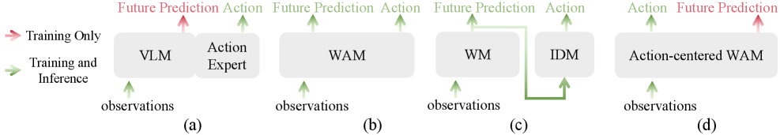 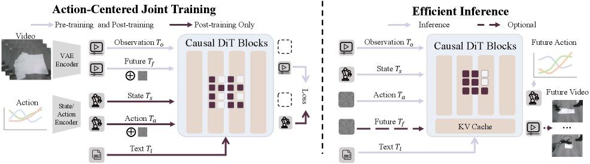 因果分离：GigaWorld。 GigaWorld [Ye et al., 2026, PKU/Shanghai AI Lab] 的设计最具工程创新性。训练阶段，模型同时生成动作 token 和视频 token，因果掩码保证动作 token 先于视频 token 生成——动作是因，视频是果。视频预测作为辅助任务提供物理先验的监督信号。推理阶段，完全跳过视频生成步骤，只运行动作生成分支。结果：推理加速 9 倍，在 RoboTwin 2.0 基准上相对 π₀.5 提升约 95%（RoboTwin 2.0 基准，自报数据）。设计核心是将"世界模型的物理先验"从推理时的显式预测转化为训练时的隐式监督——模型在训练时通过预测视频学到了物理规律，推理时不需要再"想象"就能直接做出物理一致的决策。 无标签预训练：LAWM/LAPA。 LAWM [Tharwat et al., 2025, Adelaide] 从纯视频（无动作标签）中推断帧间潜在动作。具体做法是用对比学习提取连续帧之间的差异表征作为"伪动作"，在此基础上预训练世界模型 \(\hat{z}_{t+1} = f(z_t, \hat{a}_t^{latent})\)。下游微调时只需学习潜在动作到真实动作的映射 \(a_t = h(\hat{a}_t^{latent})\)，仅需 1/100 的配对数据。LAPA [Ye et al., 2024, UC Berkeley] 采用类似思路。这一路线的意义在于利用互联网上几乎无限的无标签视频数据学习物理先验。局限是潜在动作与真实动作之间存在语义差距——视频中物体运动可能由画面外的力产生，推断的潜在动作可能物理上不可执行。 ByteDance 的 GR 系列展示了 WAM 数据规模的演进：GR-1 [Wu et al., 2023] 用机器人视频预训练，GR-2 [Cheang et al., 2024] 扩展到互联网规模视频，模型能力随数据规模显著提升。UVAM [Luo et al., 2025] 将视频生成和动作预测统一为单一模型。UWM [Li et al., 2025, UC Berkeley] 将视频和动作纳入同一扩散去噪过程 \(p(I_{t+1}, a_t | I_t) = \int p_\theta(I_{t+1}, a_t | I_t, x_T) p(x_T) dx_T\)，联合去噪产生更强的物理一致性。 数据瓶颈的更激进解法是自主生成。DreamGen [Huang et al., 2025, Stanford] 让世界模型生成虚拟训练轨迹。PlayWorld [Yin et al., 2026, Stanford] 让机器人在好奇心驱动下自主探索，零人类示教构建通用世界模型。EgoSim [Hao et al., 2026, PKU/SJTU] 从野外单目视频学习自我中心世界模拟器，通过学习"执行器无关"的世界动力学绕过人手与机械手的形态差异。 基础设施层面，NVIDIA Cosmos [2025] 提供双范式（自回归+扩散）预训练平台和高效视频 tokenizer，被 5 篇论文引用。iVideoGPT [Wu et al., 2024, Tsinghua] 将观测、动作、奖励统一 token 化为 GPT 自回归序列。LingBot-World [Gao et al., 2025, Ant Group] 是首个开源的实时交互式世界模拟器：支持多风格环境（写实、科幻、卡通），分钟级长程时序一致性（"长期记忆"），交互延迟 <1s@16fps。代码和模型均已开源，定位为缩小开源与闭源世界模型差距的基础设施。 安全方面，WM-Safety [Parmar, 2026] 提出五级攻击者分类体系，揭示 WAM 特有风险：物理先验的数据投毒、想象空间中的 reward hacking、通过预测能力实现的欺骗性对齐。在 GRU-RSSM 架构下对抗放大系数达 2.26 倍。 WAM 的前提假设是——显式预测未来状态有助于生成更好的动作。但 2026 年的实验证据对此并不一致。 GigaWorld 提供了最具挑战性的反证：它在训练时使用视频预测作为辅助任务，但推理时完全跳过视频生成，仅输出动作，仍然在 RoboTwin 2.0 上相对 π₀.5 提升约 95%（RoboTwin 2.0 基准，自报数据）。这表明世界模型的价值可能不在于推理时的显式"想象"，而在于训练时提供了更好的正则化——视频预测任务迫使模型学习物理一致的内部表征，即使推理时不再使用这些表征。如果这一解释成立，WAM 与 VLA 的边界将变得模糊——任何使用视频预测作为辅助损失的 VLA 都可以被视为"隐式 WAM"。 DreamZero 的 30 分钟适应能力与 GEN-0 的 scaling law 之间存在值得深入分析的张力。GEN-0 证明任务成功率随数据量对数增长，暗示更多数据始终有益。而 DreamZero 仅用 30 分钟 play data 即在新机器人上超过需要大量数据训练的 VLA。两者并不矛盾但揭示了不同的适用条件：当从零学习一个新任务时，scaling law 成立——数据量是瓶颈；当在已有物理先验的基础上迁移到新机器人时，预训练的世界模型已编码了足够的物理知识，少量数据仅需校准运动学差异。关键变量是"物理先验的可迁移程度"。 DreamZero 的 7Hz 推理速度限制了其应用范围。对于抓取、放置等准静态操作任务，7Hz 已足够（动作时间尺度为数百毫秒）。但对于接触密集型力控任务（如螺丝拧紧、物体插入），控制频率通常需要 50-100Hz；对于人形运动控制（如跑步、平衡恢复），要求更高（>200Hz）。像素空间 WAM 目前无法服务于这些高频控制场景。V-JEPA 2 和 GigaWorld 的加速方案分别通过放弃像素生成和推理时跳过预测来缓解这一问题，但各自引入了信息损失和训练复杂度的代价。 LAWM/LAPA 的潜在动作语义差距在实践中表现为：从视频中推断的"伪动作"可能对应于画面外物体施加的力（如人推动桌上物体但手不在画面中），或相机运动导致的视觉变化（非物理运动），这些伪动作在下游迁移时与真实机器人动作空间存在系统性偏差。当前的缓解方法是在微调阶段学习潜在动作到真实动作的映射，但这要求映射函数足够表达以弥合语义差距。 被放弃的路线。 像素空间 WAM 在 DreamZero 之后鲜有后续工作——7Hz 的推理瓶颈和 14B 参数的计算需求使其难以工程化部署，研究者转向潜在空间（V-JEPA 2）和因果分离（GigaWorld）等更高效的替代方案。另一个值得关注的缺席是：尽管 3D 表征（GWM）在理论上优于 2D 表征，但需要多视角输入的数据约束极大限制了其适用范围，2026 Q1 未见 GWM 的后续跟进工作。这些被放弃的路线并非技术上失败，而是被效率约束淘汰——这本身印证了推理效率作为路线收敛驱动力的论点。 WAM 的核心价值在于将物理先验从隐式（VLA 依赖 VLM 内部学到的物理理解）转为显式（通过预测未来状态编码物理动力学），从而在视觉和语言扰动下获得更强的鲁棒性。然而，GigaWorld 的成功提示世界模型的真正价值可能在于训练时的正则化效应而非推理时的显式预测。五条架构路线（像素、潜在、3D、因果分离、无标签）在推理效率与信息保真度之间形成 Pareto 前沿，尚无路线在所有维度上占优。§5 将讨论 VLA 和 WAM 共用的动作生成基座——扩散策略。 Diffusion Policy 的演进轨迹——从 100 步去噪到单步 >120Hz——是推理效率作为路线收敛驱动力的最直接例证：只有当扩散策略足够快时，它才能成为跨路线的基础设施组件（被 16 篇论文引用），而非独立技术路线。 Diffusion Policy [Chi et al., 2023] 将策略建模为条件去噪扩散模型：给定观测 \(o\)，从高斯噪声 \(a_T \sim \mathcal{N}(0, I)\) 经 \(T\) 步去噪生成动作序列 \(a_0\)。反向过程 \(p_\theta(a_{t-1}|a_t, o) = \mathcal{N}(a_{t-1}; \mu_\theta(a_t, t, o), \sigma_t^2 I)\)，其中 \(\mu_\theta\) 由神经网络参数化。标准 DDPM 需要 ~100 步去噪，DDIM 通过确定性采样将步数降到 10 步。 Diffusion Policy 的三个核心特性：(1) 天然建模多模态动作分布——同一观测下多个合理动作对应去噪过程的不同采样路径；(2) Action Chunking——每次生成未来 \(H\) 步动作序列而非单步，减少闭环控制的累积误差；(3) 数据效率高——简单桌面操作任务中 10-50 个示教即可训练（复杂任务需更多数据），因为去噪目标 \(\|a_0 - \hat{a}_\theta(a_t, t, o)\|^2\) 在每个去噪步骤都提供密集梯度信号。 2024-2026 年的加速路线： 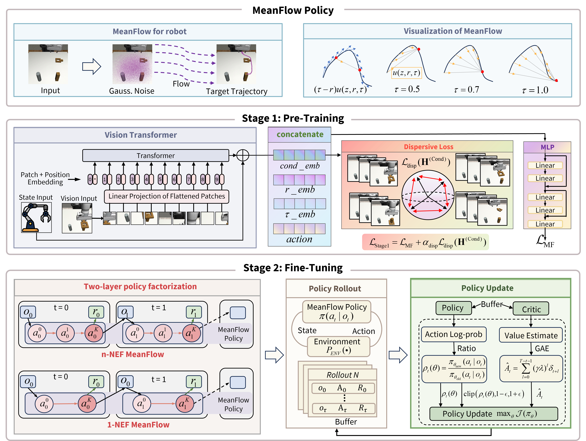 DMPO 的 MeanFlow 方法在数学上将多步去噪压缩为单步确定性映射。给定噪声 \(a_T\)，学习速度场 \(v_\theta\) 使得 \(a_0 = a_T + v_\theta(a_T, o)\) 直接输出动作。为防止所有噪声映射到同一输出（模式坍塌），引入 dispersion 正则化项约束输出的方差不低于阈值。>120Hz 的推理速度使扩散策略首次可用于实时力控。 OneDP 从工程角度实现单步化：渐进式自蒸馏，教师和学生共享权重，逐步减少步数 10→5→2→1。10 倍加速，性能损失 <2%。 扩散策略的性能上界受限于示教数据质量——Diffusion Policy 只能模仿示教者，无法超越。RL 微调突破这一限制，但对扩散过程的梯度计算带来技术困难。 FlowRL [UCSD, 2025] 系统分类了四种 Diffusion/Flow + RL 整合方式： 策略梯度法。 要求策略单步可微。DMPO 通过 MeanFlow 实现单步映射后，可直接计算 \(\nabla_\theta J = \mathbb{E}[\nabla_\theta \log \pi_\theta(a|o) \cdot A(o,a)]\)，与标准 PPO 等价。代价是 dispersion 正则化与策略梯度优化方向可能冲突。 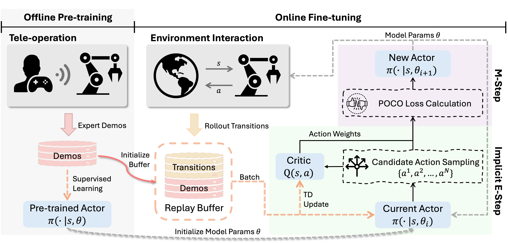 后验推断法。 POCO [Chen et al., 2026, NJU] 将策略改进建模为 EM 算法。E 步：用当前策略采样 \(N\) 个动作 \(\{a^i\}_{i=1}^N \sim \pi_\theta(a|o)\)，按奖励 \(R(o, a^i)\) 加权得到隐式后验 \(q^*(a|o) \propto \pi_\theta(a|o) \exp(R(o,a)/\beta)\)。M 步：用监督学习将策略拟合到 \(q^*\)，即 \(\min_\theta D_{KL}(q^* \| \pi_\theta)\)。每步都是标准监督学习，无需对扩散过程求梯度。模型无关设计可扩展到任意生成式策略。4 个接触密集型真机任务达到 96.7% 成功率。 蒸馏法。 收集奖励加权样本集 \(\{(o_i, a_i, w_i)\}\)，\(w_i \propto \exp(R_i/\beta)\)，用加权监督学习蒸馏到策略中。 引导法。 在去噪过程中，用奖励函数的梯度 \(\nabla_a R(o, a)\) 引导采样方向，类似 classifier-guided diffusion。 REFINE-DP [2025] 将 Diffusion Policy 从桌面操作扩展到人形全身运动：Phase 1 从全身运动示教预训练，Phase 2 用物理约束奖励（稳定性、能耗、安全）RL 微调。 MV-VDP [Li et al., 2026, HFUT] 同时预测多视角热力图视频和 RGB 视频，联合建模动作和环境响应。仅需 10 条轨迹、无需预训练，在其评估的特定真实任务上超越对比的 VLA 和 3D 方法。其设计与 WAM 的联系在于：WAM 先预测未来再解码动作，MV-VDP 联合预测视频和动作——两者都通过"预测未来"为策略注入物理约束。 2026 年的趋势是 Diffusion 预训练 + RL 微调：POCO、DMPO、ConRFT 均验证了这一路线。 扩散策略的演进呈现出两条清晰的技术主线。第一条是推理加速：从 DDPM 的 ~100 步到 DDIM 的 10 步、Consistency Policy 的 1-2 步、再到 DMPO 的单步 >120Hz，推理效率提升两个数量级，使扩散策略从离线模仿工具升级为可用于实时力控的在线策略。第二条是与 RL 的融合：扩散过程的多步去噪使标准策略梯度不可直接应用，催生了四种替代方案（单步化后直接梯度、EM 后验推断、蒸馏、引导），其中 POCO 的模型无关设计和 DMPO 的单步映射最具通用性。两条主线的交汇点是：加速到单步的扩散策略（DMPO、ConRFT）天然兼容标准 RL 梯度，消除了融合的技术障碍。扩散策略与 RL 的互补性——前者提供多模态建模和数据效率，后者突破示教性能上界——使 Diffusion + RL 成为 §7 优化算法和 §8 系统集成的共同技术基础。 数据效率瓶颈是驱动四条路线收敛的第二个结构性力量：VLA 需要大量配对数据、RL 需要数十亿步仿真交互、WAM 依赖视频预训练、Diffusion Policy 依赖高质量示教——不同的数据饥渴驱动了不同的跨层传递策略，而三阶段范式（Pre-train→SFT→RL）正是数据效率优化的自然产物。 机器人学习的数据格局呈金字塔结构，每层的规模、标签质量和利用方式不同。 底层：互联网视频/图文。 YouTube、Ego4D 等来源提供几乎无限的视觉-语义数据，无动作标签。用于 VLM 预训练（RT-2、PaLM-E）和视频世界模型预训练（GR-2、Cosmos）。提供通用视觉语义和粗粒度物理直觉。局限：不含动作标签和本体感知信息，视角（第三人称）与机器人操作视角（自我中心）存在系统偏差。 中层：仿真数据。 Isaac Lab/MuJoCo 生成的仿真轨迹包含完整的 \((s_t, a_t, r_t, s_{t+1})\) 元组，规模无限且标签精确。RL Sim2Real 的核心数据来源。存在 sim-to-real gap：仿真器的接触动力学（摩擦、变形）与真实物理有系统差异，渲染与真实场景有视觉域偏移。Domain Randomization 在物理参数范围内（摩擦 ±50%、质量 ±20%、延迟 5-30ms）随机采样训练环境。ASAP [He et al., 2025, Tencent] 则通过自动物理参数辨识精确缩小 sim-real 差距，与 DR 互补。 顶层：真机示教数据。 人类遥操作采集的真机轨迹，标签完美但稀缺。Open X-Embodiment 联合 21 家机构收集约 100 万条轨迹（22 种机器人、527 项技能）。GEN-0 [Generalist AI, 2025] 的 270,000 小时是目前报道的最大规模真机数据集。 四种策略实现三层之间的知识流动： 逐层蒸馏。 VLM 在底层数据预训练 → 中层/顶层数据 SFT → RL 微调。π₀.5 是完整实现。ByteDance GR 系列展示工业路线：GR-1 [2023] 用机器人视频预训练，GR-2 [2024] 扩展到互联网视频，UVAM [2025] 统一视频生成和动作预测为单一模型。 无标签视频→动作推断。 LAWM/LAPA 从底层纯视频推断帧间潜在动作，预训练世界模型后下游微调仅需 1/100 配对数据。具体做法：对比学习提取连续帧差异的潜在表征作为伪动作标签。局限：视频中物体运动可能由画面外力产生，推断的潜在动作可能物理不可执行。 世界模型生成数据。 DreamGen [2025, Stanford] 让世界模型生成虚拟轨迹作为训练数据。PlayWorld [2026, Stanford] 让机器人好奇心驱动探索构建世界模型，零人类示教。风险：世界模型预测误差会被生成数据放大，DreamPlan [Jia et al., 2026] 明确指出 RL 倾向于利用世界模型的预测错误获取虚假奖励。 自我中心视频迁移。 EgoSim [2026, PKU/SJTU] 从人类自我中心视频（Ego4D）学习世界模拟器并迁移到机器人。自我中心视角与机器人手眼相机天然接近。通过学习"执行器无关"的世界动力学（关注物体运动而非手的形状）绕过人手与机械手的形态差异。 Diffusion Policy 的 10-50 示教效率比 VLA 低 3-4 个数量级。原因：(1) 不处理语言指令，专注动作分布建模，所需信息量小；(2) Action Chunking 将长轨迹切为短片段，有效扩增样本；(3) 去噪目标在每个时间步提供密集梯度信号。代价是泛化性受限——难以泛化到示教未覆盖的场景。 LAWM 1/100 的含义：标准 VLA 需要 100K 轨迹则 LAWM 仅需 1K 轨迹 + 大量无标签视频。真机轨迹采集成本约每条 1-5 分钟人工，1K vs 100K 意味着数据采集时间从数月缩短到数天。 GEN-0 的 scaling law 表明更多数据 → 更好性能（对数关系）。但 DreamZero 仅用 30 分钟 play data 即在新机器人上超过 SOTA VLA 2 倍——30 分钟数据只覆盖基本运动学，物理先验由预训练提供。两者并不矛盾：scaling law 适用于从零训练的场景，DreamZero 的高效来自世界模型已编码的物理先验。 TGRPO 的发现揭示了机器人数据的信息密度不均匀：轨迹中约 5% 的 token 承载关键决策信号，95% 是冗余的平稳运动。与自然语言（几乎每个 token 都有语义信息）不同，机器人轨迹的关键信息集中在少数"决策点"（碰触物体瞬间、转向点、放置瞬间）。 机器人学习的数据问题可归结为一个核心矛盾：数据需求的量级（GEN-0 的 270,000 小时、scaling law 的对数增长）与真机数据的采集成本（每条轨迹 1-5 分钟人工）之间的不匹配。三层金字塔的跨层传递策略——VLM 预训练利用底层互联网数据、仿真器生成中层无限数据、LAWM/LAPA 从纯视频推断动作标签——本质上都是用计算代替人工标注。但每种替代都引入新的 gap：仿真器的物理精度偏差、潜在动作的语义差距、世界模型生成数据的误差放大。数据效率的另一个维度是信息密度：TGRPO 揭示的轨迹信息不均匀性意味着，机器人数据的有效利用不仅取决于总量，还取决于对关键决策点的识别和加权。§7 将讨论在这些数据约束下的优化算法设计。 优化算法的选择是四条路线收敛的技术基础——Pre-train→SFT→RL 三阶段范式之所以成立，是因为 RL 微调已被证明可应用于 VLA（VLA-RL）、Diffusion Policy（POCO、DMPO）和 WAM（DreamPlan）等不同架构，而这一通用性来自对三类梯度瓶颈的系统性解决。 机器人 RL 的梯度估计面临高维动作空间（人形 23-43 维）带来的方差问题。2024-2026 年出现三种范式。 零阶梯度（PPO/SAC）。 标准策略梯度 \(\nabla_\theta J \approx \mathbb{E}[\nabla_\theta \log \pi_\theta(a|o) \cdot A(o,a)]\) 通过采样估计，方差随动作维度线性增长。15-Minute Locomotion [Seo et al., 2025, UC Berkeley/PI] 用 4096 个并行环境在单块 A100 上运行向量化 PPO，通过大规模并行采样压制方差，将训练从 2-3 天压缩到 15 分钟。这一方法的核心是计算换精度。 一阶梯度（可微分仿真）。 可微分仿真器通过自动微分提供精确梯度 \(dJ/d\theta\)，消除采样方差。HALO [Wang et al., 2026, BUAA] 用可微仿真优化人形负重行走策略，真机验证负重 20kg。接触动力学的不可微性（刚体碰撞产生不连续力）是主要限制——HALO 用可微近似函数替代接触力模型，在接触点附近引入可控近似误差换取全局可微性。 混合梯度（Diffusion + RL）。 扩散策略的去噪过程可微，但多步去噪形成长计算图，梯度反传时衰减。§5.2 已详述三种解法：DMPO 单步化后直接策略梯度、POCO EM 后验推断绕过梯度问题、ConRFT 用 Consistency Model 实现单步端到端可微（收敛比 Flow Matching 快 2-3 倍）。 机器人任务的奖励天然稀疏——任务成功是轨迹末端的 0/1 信号。一条 500 步轨迹中，标准 TD learning 的信用分配在高维连续空间中约 50 步后几乎完全衰减。2026 年出现三种密度化策略。 世界模型生成中间奖励。 NORA-1.5 [Hung et al., 2025, NTU Singapore] 用世界模型为不同动作生成未来预测，比较"好动作"和"坏动作"的预测构建偏好奖励。推理时只运行 VLA，零额外开销。SC-VLA [Liu et al., 2025, UESTC] 预测任务进度（0→1 连续标量）和未来轨迹趋势，将末端 0/1 奖励密度化为每步的进度信号。比最优基线减少 16% 步数、提升 9% 成功率。 多域分解奖励。 RL Sim2Real 标准做法是将任务成功分解为五个维度的稠密信号： AMP（Adversarial Motion Priors）[Peng et al., 2022] 用人体动捕数据训练 GAN 判别器 \(D(s, s', a)\) 提供自然性奖励，替代手工设计的数十项指标。NMR [Zhao et al., 2026, ZJU] 用 VAE 聚类 + CNN-Transformer 学习运动数据分布，进一步提升 AMP 的表达能力。 轨迹级归一化。 TGRPO 的做法已在 §3.3 详述。核心改动是将优势函数的归一化从 token 级 \(\hat{A}_t = (A_t - \mu_{tokens}) / \sigma_{tokens}\) 改为轨迹级 \(\hat{A}_t = (A_t - \mu_{traj}) / \sigma_{traj}\)，保留关键决策 token 的信号幅度。 VLA-RL [Zhang et al., 2025, PKU] 确立了 Pre-train → SFT → RL 的三阶段范式。但机器人 RL 微调面临三个 LLM 中不存在的困难。 物理硬约束。 LLM 的 KL 惩罚是软约束，偏离参考策略不会造成硬件损坏。机器人的关节极限、力矩上限、跌倒避免是硬约束——违反即损坏硬件。SLowRL [Daneshmand et al., 2026, Universite de Montreal/TU Darmstadt] 用 rank-1 LoRA + 恢复策略安全约束进行真机 RL 微调，仅允许最小参数变化。微调时间减少 46.5%，安全违规接近零。在其测试的运动控制任务中，rank-1 已足够弥合 sim-to-real gap，提示该类任务的差距可能集中在少数参数维度，但是否适用于更复杂的操作任务需进一步验证。 非平稳环境。 LLM 的 prompt 分布在训练期间平稳。机器人的物理环境在部署后变化（温度导致摩擦变化、零件磨损、操作对象形状/重量变化）。AdaWorldPolicy [Yuan et al., 2026, University of Sydney] 用世界模型实时比较预测与实际观测的误差作为环境漂移信号，在线调整扩散策略引导方向，无需重训练。SimDist [Levy et al., 2026, MIT/Georgia Tech] 将仿真器结构先验蒸馏到潜在世界模型，真机侧用 MPC 在线规划 + 监督动力学微调实现秒级适应。 多模态动作分布。 同一任务可有多种执行方式（从左绕过 vs 从右绕过）。RL 微调时 critic 网络若未区分不同模态，梯度在模态间平均化，策略退化到无效的"平均动作"。Diffusion/Flow Matching 策略天然保持多模态性。POCO 的 EM 后验推断在 E 步通过奖励加权自然保留高奖励模态、M 步的监督学习保持分布多模态结构。 当世界模型替代仿真器成为虚拟训练环境时（DreamPlan [Jia et al., 2026, NVIDIA/UT Austin] 完全在世界模型想象空间中进行 RL 训练），产生新的 gap 问题。 仿真器的 gap 是系统性的：摩擦偏差、渲染域差距可量化。世界模型的 gap 是非均匀的——训练数据覆盖良好的场景预测精确，数据稀疏的场景可能产生物理上不可能的预测（物体穿墙、违反能量守恒）。更严重的是，RL 算法倾向于利用世界模型的预测错误获取虚假奖励（reward hacking）。WM-Safety [Parmar, 2026] 证明在 GRU-RSSM 架构下对抗放大系数达 2.26 倍。 三种梯度范式的选择受理论瓶颈约束。零阶方法（PPO/SAC）的策略梯度方差 \(\text{Var}[\nabla_\theta J] \propto d\)（\(d\) 为动作维度），人形机器人 \(d=23\text{-}43\) 时需要大量并行采样压制方差——15-Minute Locomotion 的 4096 并行环境正是此策略的工程实现。一阶方法（可微仿真）消除采样方差，但接触动力学的不可微性是根本性限制：刚体碰撞产生的力在接触/脱离瞬间不连续，自动微分在不连续点处梯度未定义，HALO 的可微近似函数本质上是用局部精度换取全局可微性。混合方法（Diffusion + RL）面临计算图深度问题：\(T\) 步去噪形成深度为 \(T\) 的反传链，梯度衰减使早期去噪步骤几乎无法从最终奖励获得有效更新信号，这解释了为什么单步化（DMPO、ConRFT）对 RL 微调如此关键。 优化算法层面的核心挑战源自机器人 RL 与 LLM RLHF 的三个结构性差异：物理硬约束（SLowRL 的 rank-1 LoRA 证明 sim-to-real gap 集中在极少数参数维度）、非平稳环境（AdaWorldPolicy 和 SimDist 提供在线适应方案）、多模态动作分布（扩散策略天然保持多模态，POCO 的 EM 后验在优化时保留分布结构）。梯度估计的三种范式——零阶采样、一阶可微仿真、混合 Diffusion+RL——分别面临方差、不连续性和计算图深度的理论瓶颈。奖励密度化从三个方向攻克稀疏信用分配：世界模型生成中间奖励（NORA-1.5、SC-VLA）、多域分解（RL Sim2Real 标准做法）、轨迹级归一化（TGRPO）。§8 将讨论这些优化技术如何在系统集成层面组合为完整的训练部署流水线。 系统集成是四条路线收敛的最终体现——独立的感知、动作生成和优化算法在这一层面组合为完整的训练-部署流水线，Pre-train→SFT→RL 三阶段范式在此获得具体的工程实例化。 §1.3 已概述 Pre-train → SFT → RL 三阶段范式与 LLM 训练流程的映射关系。本节聚焦四个代表性系统的具体实现差异。 π₀.5 [Physical Intelligence, 2025] 是这一范式的最完整工业实现：Phase 1 在互联网规模数据上预训练 VLM，Phase 2 用 Flow Matching 在机器人数据上进行 SFT（连续动作生成替代离散 token），Phase 3 用任务成功率奖励进行 RL 微调。后续 π₀.6 [2025] 进一步验证了从真实经验持续学习的可行性，形成 pretrain → flow matching → RL → online learning 的完整四阶段工业路线。 SC-VLA [Liu et al., 2025, UESTC] 在 VLA 骨干上添加任务进度和未来轨迹趋势的辅助预测头（"稀疏世界想象"），推理时用预测结果构建稠密奖励实时优化动作。比最优基线减少 16% 步数、提升 9% 成功率。SC-VLA 证明不需要完整的视频级世界模型——稀疏的进度和轨迹预测足以构建有效的稠密奖励。 GEN-0 [Generalist AI, 2025] 是首个在真实物理交互数据上建立可预测 scaling law 的具身基础模型，在 270,000 小时的多机器人、多任务数据上训练。其意义在于证明机器人基础模型的性能可随数据和参数量可预测地提升（对数关系），为数据投资提供了定量依据。 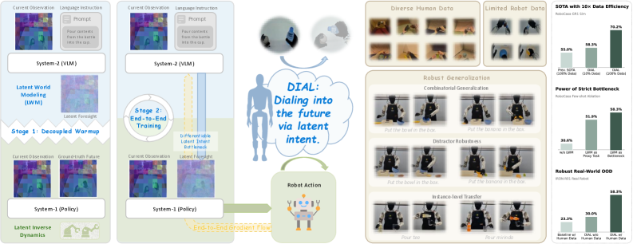 DIAL [Chen et al., 2026, Tencent/CUHK-SZ] 采用双系统架构：VLM 作为 System-2（慢思考），预测潜在未来状态（意图瓶颈设计）；轻量运动网络作为 System-1（快执行），将潜在意图加上观测转化为低延迟动作。VLM 从不直接输出动作，因此保留了预训练知识不被动作头微调破坏。仅需 1/10 的示教数据。 Hybrid 范式的关键设计问题是：世界模型应该在训练时还是推理时发挥作用？2026 年的工作给出了两种互补方案。 训练时用世界模型生成奖励。 §7.2 已介绍 NORA-1.5 和 SC-VLA 用世界模型构建稠密奖励的具体机制。AtomVLA [Sun et al., 2026, Tsinghua/ByteDance] 提供了另一种整合方式：在后训练阶段向 VLA 隐藏层注入潜在世界模型，预测头预测未来潜在状态 \(z_{t+1}, z_{t+2}\)，为动作决策提供隐式物理约束，无需修改预训练流程。这三种方案的共同特征是：世界模型的物理先验在训练时蒸馏到策略中，推理时不增加计算开销。 推理时用世界模型在线适应。 DreamPlan [Jia et al., 2026, NVIDIA/UT Austin] 完全在视频世界模型的想象空间中进行 RL 训练——世界模型生成虚拟 rollout，策略在虚拟 rollout 上优化，大幅减少真机交互需求。AdaWorldPolicy [Yuan et al., 2026, University of Sydney] 在部署时用世界模型实时比较预测与实际观测的误差作为环境漂移信号，在线调整扩散策略的引导方向，无需重训练。这一方案的代价是推理时需要同时运行世界模型和策略网络，计算开销更高。 MetaWorld-X [Shen et al., 2026, USTC] 代表了另一种融合方式：分治法。将复杂控制分解为专家策略集合（运动、伸手、抓取），每个专家用模仿约束 RL + 生物力学先验训练，VLM 引导路由器动态选择和编排专家。 RL Sim2Real 在 2026 年已完成从研究原型到工程成熟的跨越。标准流水线由两个阶段构成： 仿真训练阶段（GPU 集群，数十亿步交互）：仿真器（Isaac Lab / MuJoCo / Genesis）提供物理环境，Domain Randomization 随机化摩擦（±50%）、质量（±20%）、延迟（5-30ms）和传感器噪声，Terrain Curriculum 从平地逐步升级到斜坡、台阶和随机地形，PPO/SAC 在 Teacher-Student 框架下训练——Teacher 拥有特权信息（地形图），Student 仅使用本体感知（关节角度 + IMU）。 真机部署阶段（机载芯片 Orin/RK3588）：传感器 → 状态估计器 → 策略网络（50Hz）→ PD 目标力矩 → 伺服电机（1kHz）。推理链路仅需 1-10ms，远快于 VLA 和 WAM。 15-Minute Locomotion [Seo et al., 2025, UC Berkeley/PI] 将这一流水线的效率推向极致：单块 A100 上 4096 个并行环境运行向量化 PPO，训练从 2-3 天压缩到 15 分钟。这使研究者每天可以迭代数十次奖励函数设计。 AGILE [Zhao et al., 2026, ETH Zurich] 标准化了人形 RL 全生命周期工作流：环境验证 → 训练 → 评估 → 部署，自动化奖励调参建议，5 种代表性技能在 G1 和 Booster T1 平台一致迁移。可复现性是 RL Sim2Real 的关键痛点——同一代码在不同机器人上结果差异巨大，AGILE 将工作流从经验调试标准化为工程流程。 高效迁移方面的进展已在 §7.3 详述（SLowRL rank-1 LoRA 真机微调、SimDist 仿真器先验蒸馏）。VIRAL [He et al., 2026, CMU/UC San Diego] 统一训练视觉感知和全身控制：视觉编码器与 RL 策略端到端联合训练，大规模视觉 Domain Randomization（光照、颜色、纹理、背景、遮挡），G1 真机零样本视觉泛化。VIRAL 的发现是：视觉 sim-to-real 的难点不在控制策略而在视觉域差距，足够大规模的视觉 DR 可在无真机视觉数据的情况下弥合差距。 Unitree G1（127cm, 35kg, 23/43 DOF, 约 $16K, Orin 275 TOPS）将人形机器人研究的硬件准入门槛降低了两个数量级（对比 Boston Dynamics Atlas 的 $2M+），2026 年 3 月单月 arXiv 上出现 15+ 篇 G1 相关论文。下表总结 G1 上的代表性研究： Sensor Benchmark 的发现值得特别关注：在数据有限时，传感器越多性能反而下降——单个主动立体相机（空间泛化 87.5%，结构化操作 94.4%）优于添加压力传感器的配置（结构化操作降至 67.3%）。原因是低信噪比传感器在小数据集上引入的噪声超过其提供的信息增益。这一反直觉结论对机器人系统设计有实际指导意义。 HALO（§7.1 详述其可微仿真梯度机制）和 ABD-Net [Shin et al., 2026, UT Austin/UW-Madison] 代表了 Sim2Real 的两种前沿方向：HALO 用解析梯度替代 PPO 采样，真机验证负重 20kg 稳定行走；ABD-Net 将关节体动力学算法（ABA）惯性传播嵌入 GNN，更换机器人仅需更换拓扑图，G1/Go2 真机实时推理验证。 需要指出的是，本文综述的所有工作均处于研究验证阶段——实验在实验室受控环境或短时间户外测试中完成，尚无工作报告了量产级部署的结果。G1 Running 的 3.3m/s 跑步在户外验证了数百米，但长时间运行的硬件耐久性、极端天气适应性、与人类共存的安全保障均未测试。Dream2Act 的 37.5% 成功率虽首次使全身交互任务成为可能，但距离实用仍有很大差距。 研究 demo 到实际部署的差距集中在三个维度：(1) 鲁棒性——实验室结果通常在 10-100 次试验中报告成功率，而工业部署要求数万次连续无故障运行；(2) 长尾场景——训练数据和评估基准无法覆盖真实世界的全部变化（罕见物体、异常光照、未预见的人类行为）；(3) 系统集成——论文验证单个模块（感知、规划或控制），而部署要求全栈可靠运行。 当前领域的评估实践存在系统性不足。试验规模：多数工作报告 10-50 次试验的成功率，统计功效不足以区分 5-10% 的性能差异——而这恰恰是不同方法间的典型差距。例如，20 次试验中 18 次成功（90%）的 95% 置信区间为 [68%, 99%]，无法与 16 次成功（80%）显著区分。基准碎片化：VLA 工作主要使用 SIMPLER 和 Calvin，WAM 使用 RoboTwin 和自定义环境，RL Sim2Real 使用 Isaac Lab 中的运动基准，Diffusion Policy 使用 RLBench 和真机桌面任务——路线间几乎无交叉基准。评估-训练分布偏移：多数工作在训练分布内（in-distribution）报告成功率，对分布外泛化（新物体、新场景、新指令）的评估有限且不标准化。可复现性：60 篇调研论文中约半数开源了代码，但开源不等于可复现——硬件差异、随机种子敏感性和超参数选择使独立复现仍然困难。AGILE [Zhao et al., 2026] 的标准化工作流是解决这一问题的重要尝试，但覆盖范围限于 RL Sim2Real 人形运动控制。 系统集成层面的关键结论是：(1) Pre-train → SFT → RL 三阶段范式已成工业共识，π₀.5 和 DIAL 代表了两种不同的实现哲学（端到端 vs 双系统）；(2) 世界模型在训练时和推理时发挥互补作用，前者零推理开销但无法适应环境变化，后者可在线适应但增加推理成本；(3) Sim2Real 工程化已成熟（15 分钟训练、AGILE 标准化），但"研究验证"到"实际部署"仍是最大的未跨越鸿沟。§9 将从引用图谱角度分析领域结构。 为定量揭示领域知识网络的结构特征，我们构建了包含 104 个节点和 299 条引用边的论文引用图谱。其中 60 个节点为 2025-2026 年的调研论文，44 个节点为被高频引用的参考文献（2017-2025 年）。节点按五大技术路线着色：VLA（蓝色）、WAM（绿色）、RL Sim2Real（橙色）、Diffusion Policy（紫色）、Hybrid（红色）。 方法论说明。 该图谱基于本文纳入的 104 篇论文的内部引用关系构建，不应被解读为领域全局的引用结构。被引次数反映的是本文语料内的引用频率，而非 Google Scholar 或 Semantic Scholar 的全局被引量。此外，由于本文以 arXiv 预印本为主要来源，部分工业界未公开发表的工作（如 Tesla Optimus、Figure AI 内部系统）未被纳入。以下分析应在这一方法论边界内理解。 引用图中被引次数最高的节点构成了领域的"基础设施层"： PPO 和 Diffusion Policy 各被 16 篇论文引用，揭示了一个结构性特征：RL 和扩散方法已从"技术路线"升级为"跨路线基础设施"。无论 VLA、WAM 还是 Hybrid 方向的工作，都在训练流程中使用 PPO 进行后训练或使用 Diffusion/Flow Matching 生成动作。需要指出，在 104 篇论文的语料中，16 次被引的统计意义有限——这一数字的价值不在于其绝对大小，而在于 PPO 和 Diffusion Policy 被来自不同技术路线的论文引用这一跨路线特征。其他高频被引的基础设施节点还包括 GR00T N1（被 8 篇 2026 论文引用，成为 VLA 生态公共基准）、PaLM-E（6 次）、SayCan（6 次）。 调研论文中连接数（入边 + 出边）最高的节点反映了哪些工作最积极地整合不同路线的成果： DreamZero 作为引用图中连接最广的论文，其技术位置也最具代表性——它是像素空间 WAM 的代表作，但架构同时借鉴了 VLA 的语言条件化、Diffusion 的去噪生成和 RL 的微调范式，体现了 2026 年的融合趋势。 2025-2026 调研论文的机构分布呈现两个特征： 中国高校主导论文数量。 PKU、Tsinghua、SJTU、ZJU 等高校，以及 Tencent、ByteDance、Alibaba 等产业实验室，贡献了超过 60% 的调研论文。尤其在 VLA 生态扩展（SpatialVLA、CoT-VLA、UniVLA）和 RL Sim2Real 人形运动控制方向表现突出。 工业界引领范式创新。 Physical Intelligence（π₀ 系列跨越三代迭代）、NVIDIA（GR00T N1、Cosmos、DreamPlan）、Google DeepMind（DreamZero）、Meta FAIR（V-JEPA 2）在范式级创新上占据主导地位。π₀ 系列从 Flow Matching 到 RL 微调到在线学习，形成了最完整的工业技术栈。 上述分布特征应在本文搜索策略的局限下理解（§10 详述），不宜直接推广为领域全局的机构格局。 引用图谱揭示了该领域的两个结构性特征。第一，PPO 和 Diffusion Policy 各被 16 篇论文引用，已从独立技术路线升级为跨路线基础设施——无论 VLA、WAM 还是 Hybrid 方向的工作，都在训练流程中使用这两个组件。第二，连接数最高的调研论文（DreamZero ~28 边、SC-VLA ~19 边）均为跨路线融合工作，而非单一路线的深耕，这从引用网络角度印证了 §8 讨论的 Hybrid 融合趋势。机构分布的"中国高校主导数量、工业界引领范式"格局值得关注，但需在本文搜索偏向（§10 将讨论）的背景下谨慎解读。§10 将基于以上各章的分析总结趋势和开放问题。 趋势一：Pre-train → SFT → RL 三阶段共识。 π₀.5、SC-VLA、VLA-RL 等多项工作独立验证了从 VLM 预训练到模仿学习/Flow Matching 对齐再到 RL 微调的三阶段路线。这一范式与 LLM 的 Pre-train → SFT → RLHF 在结构上高度类似，意味着 LLM 领域积累的训练技巧（KL 散度约束、参数冻结策略、课程学习等）可直接迁移到机器人学习中。 趋势二：世界模型从概念验证到基础设施。 V-JEPA 2 的 10-100 倍推理加速、GigaWorld 的 9 倍推理加速和 LAWM 仅需 1/100 配对数据的效率突破，使世界模型从学术实验走向可部署组件。NVIDIA Cosmos 作为双范式（自回归 + 扩散）预训练平台的出现，标志着世界模型开始具备基础设施属性。 趋势三：RL 微调成为通用后训练步骤。 POCO 的模型无关设计证明 RL 微调可应用于任何生成式策略（Diffusion、Flow Matching、自回归），而非仅限于特定架构。ConRFT 用 Consistency Model 实现单步生成且端到端可微，将 RL 微调收敛速度提升 2-3 倍。TGRPO 修复了 GRPO 在轨迹级应用时的 token 不平衡问题。这些工作共同将 RL 微调从架构特定的技巧提升为通用的后训练步骤。 趋势四：推理效率革命。 从 Diffusion Policy 的 100 步去噪到 DMPO 的单步 >120Hz，推理效率提升两个数量级。在表征空间维度，从像素空间（DreamZero 7Hz）到潜在空间（V-JEPA 2 10-100 倍加速）到因果分离（GigaWorld 推理时跳过视频生成 9 倍加速），WAM 的推理瓶颈正被系统性消除。AR-VLA 的自回归动作头因无需迭代去噪而天然兼容 LLM 推理基础设施（KV cache、投机解码），在工程部署上具有独特优势。 趋势五：在线适应。 AdaWorldPolicy 用世界模型实时检测环境漂移并在线调整策略引导方向，SimDist 将仿真器结构先验蒸馏到潜在世界模型实现秒级真机适应，SLowRL 用 rank-1 LoRA 在真机上安全微调。π₀.6 验证了从真实经验持续学习的可行性。这些工作共同指向：机器人策略不应是静态的"部署即冻结"，而应具备在部署后持续适应环境变化的能力。 趋势六：跨具身迁移。 DreamZero 仅需 30 分钟 play data 即可适应全新机器人（物理先验由视频预训练提供，play data 只需覆盖基本运动学）。KineVLA 通过高层位姿预测 + 低层逆运动学的解耦实现跨具身迁移（只需替换 IK 求解器）。UniVLA 将不同机器人的动作统一到潜在动作空间。ABD-Net 的物理信息 GNN 通过更换拓扑图实现跨平台泛化。这些工作在有限平台上展示了跨具身迁移的初步可行性，但距离"一个模型驱动所有机器人"的愿景仍有根本性差距。 安全性。 Tex3D [Chen et al., 2026, NYU/NUS] 仅通过修改物体表面纹理即可使 VLA 失败率达 96.7%（端到端 3D 对抗纹理攻击），WM-Safety [Parmar, 2026] 揭示了世界模型特有的数据投毒和欺骗性对齐风险（GRU-RSSM 架构下对抗放大系数 2.26 倍）。SLowRL 的 rank-1 LoRA + 恢复策略约束是安全部署的初步探索，但实际部署的安全保障远未就绪。 评估标准与方法学。 当前领域的评估困境不仅是基准碎片化（不同路线使用不同仿真环境），更是方法学层面的系统缺失。§8.5b 已详述试验规模不足、分布外泛化评估缺乏标准化和可复现性障碍等问题。更深层的挑战是：现有基准主要衡量单次任务成功率，但实际部署关心的是连续运行的可靠性（MTBF）、故障恢复能力和长尾场景覆盖。AGILE 和 G1 Sensor Benchmark 是标准化的重要尝试，但覆盖范围局限于各自的子领域。建立跨路线、跨具身、覆盖 in-distribution 和 out-of-distribution 的统一评估框架，是该领域从研究走向工程的前提条件。 长程任务。 现有工作大多验证单个操作技能（抓取、推挡、叠放），对需要数十步规划和错误恢复的长程任务（如整理房间、准备餐食）仍力不从心。CoT-VLA 的视觉推理链和 DIAL 的 System-2 慢思考提供了规划能力的雏形，但在复杂多步任务中的可靠性尚未验证。 数据飞轮。 GEN-0 的 270,000 小时数据和 scaling law 表明数据量持续重要，但机器人数据的采集成本远高于互联网文本（每条轨迹 1-5 分钟人工）。LAWM/LAPA 的无标签视频路线和 PlayWorld 的自主探索路线能否真正替代配对数据，仍需更大规模验证。 物理推理深度。 当前世界模型主要学习运动学级别的物理（物体移动、碰撞）。对材料力学（变形、断裂）、流体力学（倒水、搅拌）等更深层物理现象的建模仍处于初级阶段。DreamZero 的 30 分钟适应和 GigaWorld 的因果分离都依赖运动学级别的预测，尚未触及这些更复杂的物理过程。 上述开放问题聚焦于研究社区内部的技术挑战。若以"机器人走进千家万户"为目标，则存在更深层的系统性差距，可归纳为六个维度。 人机交互与非专家用户。 当前工作假设用户提供结构化语言指令（"把红色杯子放到桌子左侧"），但家庭用户的交互模式是模糊口语（"把那个放那儿"）、手势、甚至隐含期望（机器人应主动识别脏碗并清洗）。这要求空间指代消解、共享注意力建模、对话上下文追踪和用户意图推理——这些能力在 NLP 领域有所进展，但尚未与机器人策略学习整合。更关键的是，机器人失败时如何向非专家解释原因并接受纠正，涉及可解释 AI 与交互式学习的交叉，当前无对应工作。 触觉感知与接触丰富操作。 本文综述的工作极度视觉中心，但家庭操作的核心难题恰恰是视觉无法解决的：握鸡蛋与握杯子需要实时力反馈而非视觉判断；判断水果成熟度、衣物材质需要触觉表征；拧瓶盖、插插头等接触密集任务需要 50-100Hz 的力控精度。G1 Sensor Benchmark 发现小数据集上触觉传感器反而引入噪声，但这不意味着触觉不重要——而是触觉表征学习的数据效率问题尚未解决。 可变形物体操作。 π₀ 的叠衣服能力被反复提及，但可变形物体（衣物、食品、塑料袋、电线）的状态空间是无限维的，当前刚体仿真器无法精确建模。这意味着 RL Sim2Real 路线在柔性操作上面临根本性的 sim-to-real gap，WAM 的物理预测对柔性物体精度急剧下降。这可能需要全新的表征和仿真技术，而非当前路线的自然延伸。 长程任务的可靠性量化。 §10 已将长程任务列为开放问题，但需量化其严峻程度。假设家庭机器人每天执行 100 次操作，一年 36,500 次。当前最好的单技能成功率约 90-97%，即使取 97%，一年将产生约 1,100 次失败——平均每天 3 次。达到消费级可接受水平（年故障率 <1%）要求单次成功率 >99.97%，比当前最优结果高两个数量级。更严峻的是，家庭环境中的失败不是"任务未完成"，而可能是"打翻热水""摔碎贵重物品"——错误恢复能力可能比正确执行更重要。 计算约束与边缘部署。 消费级机器人的计算预算远低于研究平台。Orin（275 TOPS，约 $500）是当前上限，更可能的配置是 RK3588（6 TOPS，约 $50）。7B VLA 在 Orin 上的推理延迟约 100-200ms（INT4 量化），勉强满足操作任务但无法胜任运动控制。DIAL 的云边双系统架构和 ECHO 的云边协同扩散是该方向的初步探索，但系统性的边缘部署优化——模型量化、知识蒸馏、动态推理分配——在机器人场景中的研究远不如 NLP/CV 领域成熟。 物理安全与行为可预测性。 综述的安全讨论集中在对抗攻击（Tex3D）和数据投毒（WM-Safety），但家庭部署的安全核心是：与人共处时的物理安全（碰撞力矩上限、紧急停止、对儿童和宠物的特殊保护）、行为可预测性（人类需要能预测机器人下一步动作才能信任共处一室）、以及优雅降级（模型不确定时应停止并请求帮助，而非执行可能危险的动作）。SLowRL 的安全约束是初步尝试，但距离形式化安全验证和认证体系仍有根本差距。 这六个维度的共同特征是：它们不是当前四条技术路线的自然延伸可以解决的，而是需要与人机交互、触觉感知、柔性体仿真、形式化验证等领域的深度交叉。机器人学习从实验室走向家庭，不仅需要算法突破，更需要跨学科的系统性整合。 本综述存在以下局限性。时效性：机器人学习领域发展极快，本文覆盖截止于 2026 年 4 月，部分结论可能在数月内需要修正。论文选择偏差：我们的搜索以英文 arXiv 预印本为主，可能遗漏了工业界未公开发表的工作（如 Tesla Optimus、Figure AI 的内部进展）以及非英文文献。机构分布数据的解读：§9 报告中国高校贡献超过 60% 的调研论文，但这一比例可能部分反映了我们搜索策略的偏向（如对 arXiv 中文作者论文的更高覆盖），而非纯粹的领域客观分布。缺乏统一基准评估：由于不同工作使用不同的仿真环境和真机任务，本文无法提供覆盖所有方法的统一定量对比——这也是该领域本身的一个开放问题。引用图谱的内部性：§9 的引用分析基于本文纳入的 104 篇论文的内部引用关系，不应被解读为领域全局的引用结构。 本文综述了 2024-2026 年机器人学习领域的 60 余篇核心工作，提出了以下核心发现： (1) 范式收敛：Pre-train → SFT → RL 的三阶段训练范式已成共识，与 LLM 训练流程在结构上高度类似。VLA 提供语言理解和任务泛化，WAM 提供物理先验和鲁棒性，RL Sim2Real 提供高性能运动控制，Diffusion Policy 提供多模态动作生成——四条路线在 Hybrid 范式下互补整合，而非相互替代。 (2) 基础设施化：PPO 和 Diffusion Policy 已从独立技术路线升级为跨路线基础设施，世界模型正在从研究课题转变为训练管线中的标准组件。 (3) 效率革命：从推理（Diffusion 100 步→DMPO 单步）到训练（15 分钟完成人形运动训练）到数据（LAWM 1/100 配对数据），全链路效率突破正在使机器人学习从少数顶级实验室的专属领域变为可广泛参与的研究方向。 对于希望进入该领域的研究者，建议的阅读路径为：首先理解 Diffusion Policy [Chi et al., 2023] 和 PPO [Schulman et al., 2017] 两个基础设施节点；然后沿 VLA 主线阅读 RT-2 → OpenVLA → π₀ → π₀.5 的演进；在此基础上阅读 DreamZero 了解 WAM 的核心范式；最后通过 POCO 或 ConRFT 理解 Diffusion + RL 融合的技术前沿。
动作表示
精度
推理速度
RL 微调兼容性
多模态建模
离散 token (RT-2, OpenVLA)
~4mm (256 bin)
快（next-token）
直接 PPO/GRPO
天然支持（分类分布）
Flow Matching (π₀)
连续精度
中（~10 步 ODE）
需间接方法（ConRFT/POCO）
天然支持
自回归连续 (AR-VLA)
连续精度
快（无迭代）
直接 PPO（\(\log p\) 可解析）
依赖维度排序
3.2 2026 架构创新
3.3 VLA + RL 微调
3.4 VLA 生态
3.5 小结
§4 WAM：先想象，再行动
4.1 核心范式
4.2 五条架构路线
4.3 数据革命与平台
4.4 争议：世界模型是否真正必要？
4.5 失败模式
4.6 小结
§5 动作生成与扩散策略
5.1 扩散策略的加速


方法
年份
采样步数
推理频率
技术路径
Diffusion Policy
2023
~100 (DDIM 10)
~10Hz
DDPM 基线
ACT/ALOHA [Zhao et al., 2023]
2023
1 (CVAE)
>100Hz
非扩散路线，Action Chunking Transformer
DP3 [2024]
2024
~10
~10Hz
3D 点云输入
Consistency Policy [2024]
2024
1-2
~50Hz
Consistency Model 直接映射
π₀ [2024]
2024
~10
~10Hz
VLM + Flow Matching
OneDP [Wang et al., 2024, Columbia/NVIDIA]
2024
1
~100Hz
渐进自蒸馏 10→5→2→1
DMPO [Zou et al., 2026, SYSU]
2026
1
>120Hz
MeanFlow 单步映射 + RL 微调
5.2 Diffusion + RL 融合
5.3 Diffusion vs RL 互补性
维度
Diffusion Policy
RL
数据来源
人类示教
奖励函数 + 探索
性能上界
受限于示教者
可超越示教
训练稳定性
极稳定（去噪目标）
不稳定（策略梯度方差）
样本效率
10-50 示教
数十亿步交互
多模态性
天然建模
需特殊处理
5.4 小结
§6 训练数据：金字塔、流动与效率
6.1 三层数据金字塔
6.2 跨层知识传递
6.3 数据效率定量对比
方法
所需真机数据
训练计算量级
核心限制
RL Sim2Real (PPO)
0（纯仿真）
GPU 小时级
仿真精度
Diffusion Policy
10-50 示教
单卡小时级
示教多样性
VLA SFT (OpenVLA)
~100K 轨迹
多卡天级
预训练质量
WAM (LAWM)
1/100 配对 + 纯视频
多卡天级
潜在动作语义差距
Hybrid (π₀.5)
混合数据
集群周级
pipeline 复杂度
6.4 数据质量 vs 数量
6.5 小结
§7 优化算法：梯度、奖励与 RL 微调
7.1 梯度估计
7.2 奖励设计与密度化
奖励域
指标
权重策略
稳定性
躯干偏差、ZMP 余量、角动量变化率
高权重，安全基线
运动性能
速度跟踪、步态对称性、步频平滑度
核心任务奖励
能耗
力矩平方积分 CoT、机械功
中等权重
安全
关节极限、速度上限、自碰撞、跌倒惩罚
硬约束
自然性
动作平滑度、AMP 判别器
替代人工调参
7.3 从 LLM RLHF 到机器人 RL 的特有困难
7.4 Sim2Real Gap vs World Model Gap
7.5 梯度估计的理论视角
7.6 小结
§8 系统集成与部署
8.1 三阶段训练范式
8.2 世界模型的双重角色
8.3 Sim2Real 工程化
8.4 G1 硬件生态催化效应
类别
工作
核心方法
关键指标
运动控制
G1 Running [Olkin et al., 2026, Caltech]
参数化运动库 + PPO
3.3m/s 跑步纪录，户外数百米
运动控制
EgoNav [Wang et al., 2026, Stanford]
自我中心视频 + 扩散轨迹
零样本室内外导航
全身控制
BAT [Baek et al., 2026, Georgia Tech]
敏捷/稳定双策略切换
在线硬切换
全身控制
ECHO [Jia et al., 2026, Alibaba/ZJU]
云边协同扩散
38 维运动表征，1kHz 边端追踪
视频驱动
Dream2Act [Xu et al., 2026, Tsinghua]
视频生成 + 轨迹提取
37.5%（baseline 0%）
传感器
Sensor Benchmark [Kuhn et al., 2026]
14 种传感器组合测试
单相机最优 87.5%
安全巡检
SafeGuard ASF [Canh et al., 2026]
ReAct + 多模态感知
火灾 mAP 94.2%
重定向
NMR [Zhao et al., 2026, ZJU]
VAE 聚类 + RL 专家
消除关节不连续
8.5 研究验证与实际部署的差距
8.5b 评估方法学的局限
8.6 小结
§9 引用图谱与领域结构
9.1 图谱概况
9.2 基础设施节点
排名
论文
被引次数
领域
意义
1
PPO [Schulman et al., 2017]
16
RL
跨路线通用优化器
1
Diffusion Policy [Chi et al., 2023]
16
Diffusion
多模态动作生成基座
3
OpenVLA [Kim et al., 2024]
14
VLA
开源 VLA 标杆
3
π₀ [Physical Intelligence, 2024]
14
VLA/Hybrid
Flow Matching VLA 开创者
5
RT-2 [Brohan et al., 2023]
13
VLA
VLM 输出动作 token 的奠基作
9.3 最互联的调研论文
论文
总连接数
特征
DreamZero [Ye et al., 2026]
~28
同时引用 VLA（π₀、OpenVLA）、WAM（V-JEPA 2、Cosmos）和 Diffusion（DDPM、Flow Matching）三个领域
SC-VLA [Liu et al., 2025]
~19
VLA + 稀疏世界模型 + RL 微调的自纠正架构
AdaWorldPolicy [Yuan et al., 2026]
~16
世界模型在线适应 + 扩散策略的交叉创新
9.4 机构分布
9.5 小结
§10 趋势、开放问题与结论
六大趋势
开放问题
从实验室到家庭：技术差距分析
本文局限
结论
References
Comments